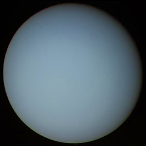

VENUS
Vénus est une des quatre planètes telluriques du Système solaire. Elle est la deuxième planète par ordre d'éloignement au Soleil, et la sixième par masse ou par taille décroissantes. La planète Vénus a été baptisée dunom de la déesse Vénus de la mythologie romaine...
NEPTUNE
Neptune est la huitième et dernière planète du Système solaire par distance croissante au Soleil.Neptune orbite autour du Soleil à une distance d'environ 30 unitées astronomique...
LE SOLEIL
le Soleil est l’étoile du Système solaire. Dans la classification astronomique, c’est une étoile de type naine jaune, composée d’hydrogène (75 % de la masse ou 92 % du volume) et d’hélium (25 % de la masse ou 8 % du volume)...
MERCURE
Mercure est la planète la plus proche du Soleil et la moins massive du Système solaire1. Son éloignement au Soleil est compris entre 0,31 et 0,47 unité astronomique (46 et 70 millions de kilomètres)...
JUPITER
Jupiter est une planète géante gazeuse. Il s'agit de la plus grosse planète du Système solaire, plus volumineuse et massive que toutes les autres planètes réunies, et la cinquième planète par sa distance au Soleil (après
Mercure, Vénus, la Terre et Mars)...
LA TERRE
La Terre est une planète du Système solaire, la troisième plus proche du Soleil et la cinquième plus grande, tant en taille qu'en masse, de ce système planétaire dont elle est aussi la plus massive des planètes telluriques...
CERES
Cérès est la plus petite planète naine reconnue du Système solaire ainsi que le plus gros astéroïde de laceinture principale ; c'est d'ailleurs la seule planète naine située dans la ceinture d'astéroïdes...

PLUTON
Pluton, officiellement désignée par (134340) Pluton(désignation internationale (134340) Pluto), est la planète naine la plus volumineuse (2 372 km de diamètre, contre 2 326 km pour Éris) connue du Système solaire et la deuxième au niveau de la masse (après Éris)...
HAUMEA
Hauméa, officiellement désignée comme (136108) Haumea soit (136108) Hauméa en français, est une planète naine transneptunienne (un plutoïde) du Système solaire membre de la ceinture de Kuiper....

URANUS
Uranus est une planète géante de glaces de type Neptune froid. Il s'agit de la 7e planète du Système solaire par sa distance au Soleil, de la 3e par la taille et de la 4e par la masse. Elle doit son nom à la divinité romaine du ciel, Uranus, père de Saturne et grand-père de Jupiter....
MAKÉMAKÉ
Makémaké, officiellement désignée par (136472) Makémaké (désignation internationale (136472) Makemake), est la troisième plus grande planète naine connue. Elle appartient à la ceinture de Kuiper et fut découverte en 2005 par Michael E. Brown, Chadwick Trujillo et David L. Rabinowitz du California Institute of Technology....
ÉRIS
Éris, officiellement désignée par (136199) Éris (désignation internationale (136199) Eris), est la planète naine connue la plus massive du Système solaire (27 % plus massive que Pluton) ainsi que la deuxième plus grande en termes de taille (2 326 kilomètres de diamètre, contre 2 370 kilomètres pour Pluton)...